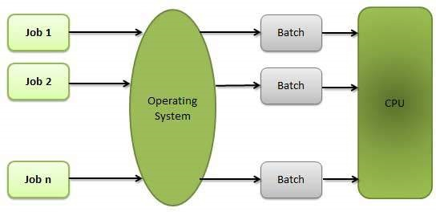
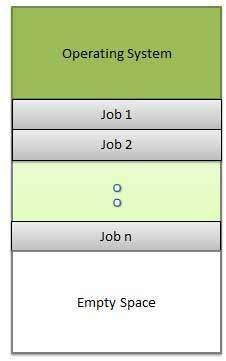

| Table of contents: |
|---|
| OS-Home |
| OS-Overview |
| OS-Process |
| OS-Properties |
| OS-Multithreading |
Batch processing is a technique in which an Operating System collects the programs and data together in a batch before processing starts.
Multitasking is when multiple jobs are executed by the CPU simultaneously by switching between them. Switches occur so frequently that the users may interact with each program while it is running.

Sharing the processor, when two or more programs reside in memory at the same time, is referred as multiprogramming. Multiprogramming assumes a single shared processor. Multiprogramming increases CPU utilization by organizing jobs so that the CPU always has one to execute.
The following figure shows the memory layout for a multiprogramming system.
Spooling is an acronym for simultaneous peripheral operations on line. Spooling refers to putting data of various I/O jobs in a buffer. This buffer is a special area in memory or hard disk which is accessible to I/O devices.